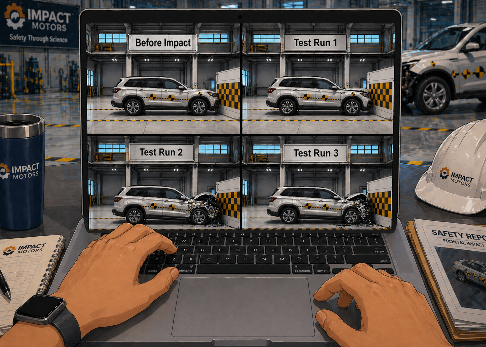
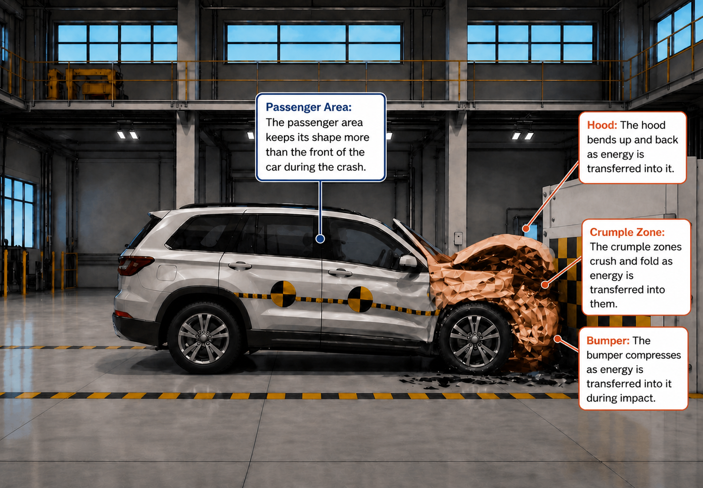

Impact Motors:
Crash Investigation
Impact Motors has completed a series of crash tests, but the results don’t match. The crashes look similar at first, but the evidence shows an important difference.
The engineering team needs a Junior Crash Test Scientist to examine the evidence and figure out what’s happening.
You will examine crash test evidence, identify patterns, and explain why the crash results are different.

In this lesson, students investigate crash test evidence to develop a scientific explanation for how energy is transferred during a collision and how that transfer connects to motion, vehicle changes, and surrounding effects.
Crash Investigation
Recent crash tests don’t all match, and passenger safety may be at risk. The engineering team doesn’t yet know why the crash results are different.
Your team has been brought in to investigate the crash evidence, identify patterns, and build an explanation.
You report to Molly, the Senior Safety Engineer. She’s asked your team to analyze the crash data and determine what the evidence shows.
Your team will now investigate the crash by examining evidence, looking for patterns, and explaining why the crash results are different.
You will make your own investigation choices, but your work will support the larger Impact Motors safety team.

You enter the Impact Motors test facility. The engineering team has been reviewing recent test results.
You and your team meet with Molly, the Senior Safety Engineer.

Molly glances at her computer and pauses.
The investigation is now in your hands.
After meeting with Molly, you review the crash test system she showed you. She's right, the results don’t all match.
Something is different between these tests, but it’s not clear why.
It’s time to dig in. To explain the difference, you’ll need to decide where to start looking for evidence.

Where will you start?
You can examine how the car moved before the crash, or what changed after impact.
Each starting point reveals different clues, but all help explain why the crash results are different.


Record what you notice during each test run. Focus on how the car moves.
| Test Run | Status | Observation | Replayed At |
|---|
How did the car’s motion differ across the test runs? What patterns do you notice?

How do the changes differ across the test runs? What patterns do you notice about where the vehicle changes or damage appears?
Your team has gathered evidence from each crash test and decided to debrief.
All Junior Crash Test Scientists investigated the same three test runs but from different perspectives: motion before impact and vehicle changes after impact.
Compare the evidence. What patterns do you notice between the motion data and the post-impact vehicle change observations?
| Test Run # | Motion Data | VEHICLE CHANGES AFTER IMPACT | Post-Impact Image |
|---|---|---|---|
|
Test Run 1
|
Slower motion before impact | Less front-end change observed |

|
|
Test Run 2
|
Fastest motion before impact | Most front-end change observed |

|
|
Test Run 3
|
Medium motion before impact | Moderate front-end change observed |
You notice a pattern starting to emerge. Now you and your team need more evidence to explain it.
Your team has spotted a pattern: test runs with faster motion showed more vehicle change after impact.
To help explain the pattern, you review a Crash Science Briefing from Impact Motors data archives.
A moving car has energy because it is in motion. During a crash, that energy does not disappear. It moves through the crash system and can cause changes.
When a car is moving faster before impact, more energy is involved in the crash. That can help explain why some test runs showed more front-end change than others.
Use the briefing to help explain what you observed during your investigation.
Your team takes a moment to process the archived brief and then looks back at the crash test evidence.
Your team now wonders,

Your team has evidence from the crash test runs, and now the archived briefing shows that energy is involved. But how energy moves through the crash system is still unclear.
Your team updates Molly, the Senior Safety Engineer, on your progress.
She pulls up an analysis tool on her screen.
No single test shows the full picture.
Where will you start your energy analysis?

Where will you start your energy analysis?
You decide to analyze evidence of energy transfer in the car.
Molly brings up the Crash Test Analysis Tool.
Crash Test Energy Analysis
Choose a crash test run to compare before and after impact:
| Before Impact | After Impact |
|---|---|
|
|
|
You review the results from the analysis.
Look closely at what changed between the before and after images.
What evidence shows that energy moved into the car during the crash?
You decide to analyze how energy spreads into the surroundings during the crash.
Molly opens the Crash Test Analysis Tool.
You begin your analysis.
Crash Test Energy Analysis
Choose a crash test run to compare before and after impact:
| Before Impact | After Impact |
|---|---|
|
|
|
You review the results from your analysis.
Look closely at what happens around the crash.
What evidence shows that energy moved into the surroundings during the crash?
Your Junior Crash Test Scientist team now shares evidence gathered from different analysis paths.
Some team members analyzed evidence of energy transfer through the car. Other teams analyzed evidence of energy transfer to the surroundings.


When you compare the results, the patterns begin to connect.
However, the engineering team needs more than observations.
They need a scientific explanation of why the crash results were different.
Using evidence from both paths, where did the energy go during the crash, and how do you know?
To explain what happened, you need to build a model that shows how motion, energy transfer, and crash effects are connected.
Build your model based on your evidence, not what you think should happen.
Your analysis and investigation are almost complete!
You have analyzed crash data, identified patterns, and traced evidence of energy transfer during a crash.
Now the engineering team needs your scientific explanation.
Molly opens a final report template on the screen and shares a copy with you and your team.
How is energy transferred during a crash?
What evidence of vehicle changes supports your claim and model?
What evidence from the surroundings supports your claim and model?
Explain how motion, energy transfer, vehicle changes, and surrounding effects are connected, using evidence from both the car and the surroundings.
The engineering team reviews your scientific brief.
Your work helped explain how motion, energy transfer, vehicle changes, and surrounding effects are connected during crash tests.

As a Junior Crash Test Scientist, you did more than describe vehicle changes.
You analyzed data, identified patterns, investigated energy transfer, and communicated a scientific explanation to help solve a real engineering problem.
Before you head home for the day, you take a moment to reflect on what you discovered as a Junior Crash Test Scientist at Impact Motors.
Investigation complete.
Lesson Complete
Would you like to take a six-question quiz about how and where energy is transferred when objects move?
The quiz is optional. If you take it, your responses, score, and feedback will be added to your Field Journal.